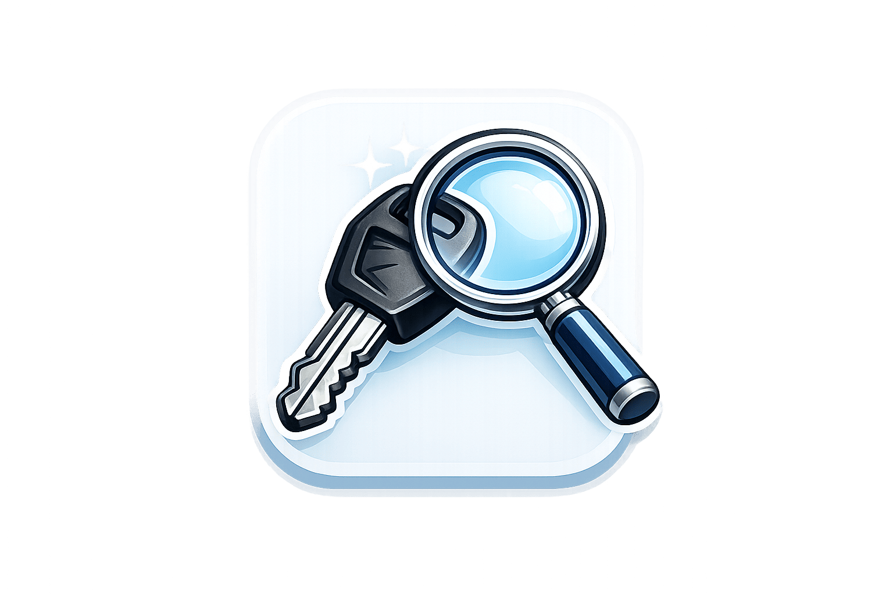
Дубликат ключа
Изготовление дубликатов ключей для квартиры, дома, гаража, мотоцикла и автомобиля.
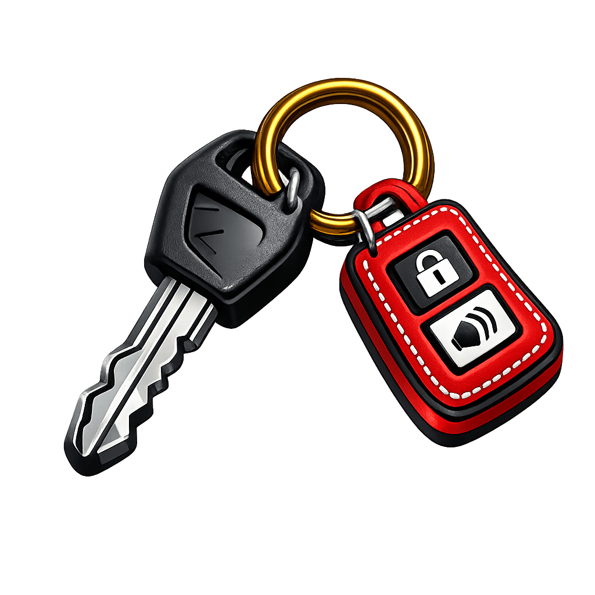
Изготовление и ремонт ключей в ПинскеБыстро, качественно, с гарантией. Изготавливаем дубликаты ключей в Пинске, восстанавливаем ключи по замку, программируем автомобильные ключи, чипы и брелки, помогаем в аварийных ситуациях.
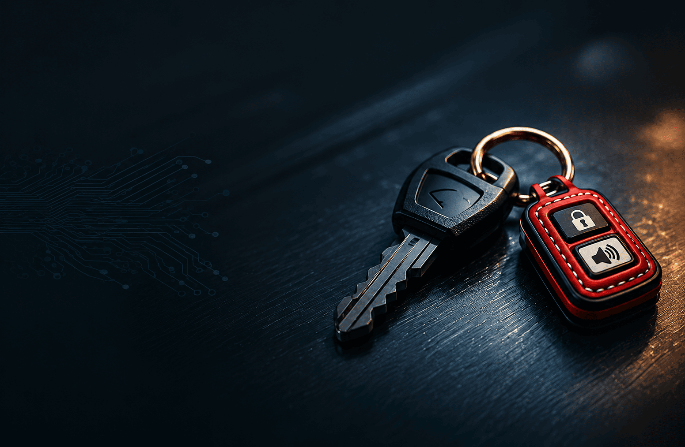
Современный сервис по изготовлению, ремонту и программированию автомобильных ключей.
Цены уточняйте по телефону. Выполняем работы быстро, аккуратно и с понятной консультацией по каждому заказу.

Изготовление дубликатов ключей для квартиры, дома, гаража, мотоцикла и автомобиля.
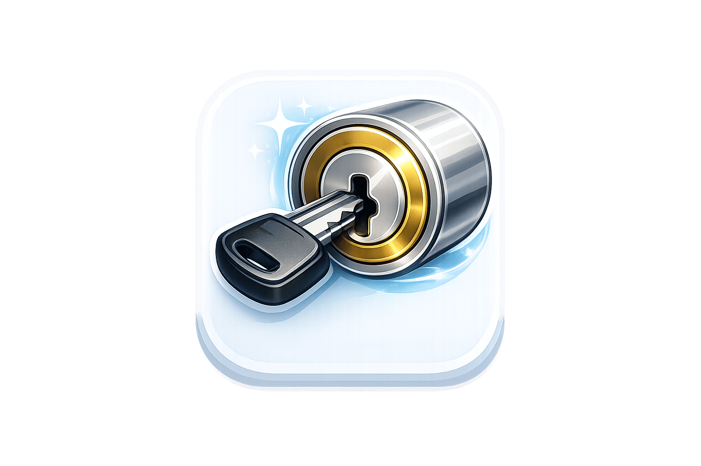
Сделаем новый ключ даже при утере оригинала — по замку или личинке.
Подробнее...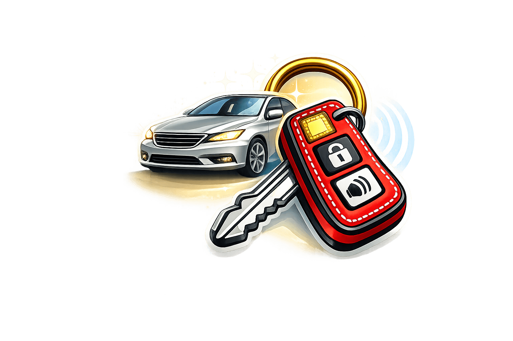
Изготавление ключей с чипом иммобилайзера и программированием на месте.
Подробнее...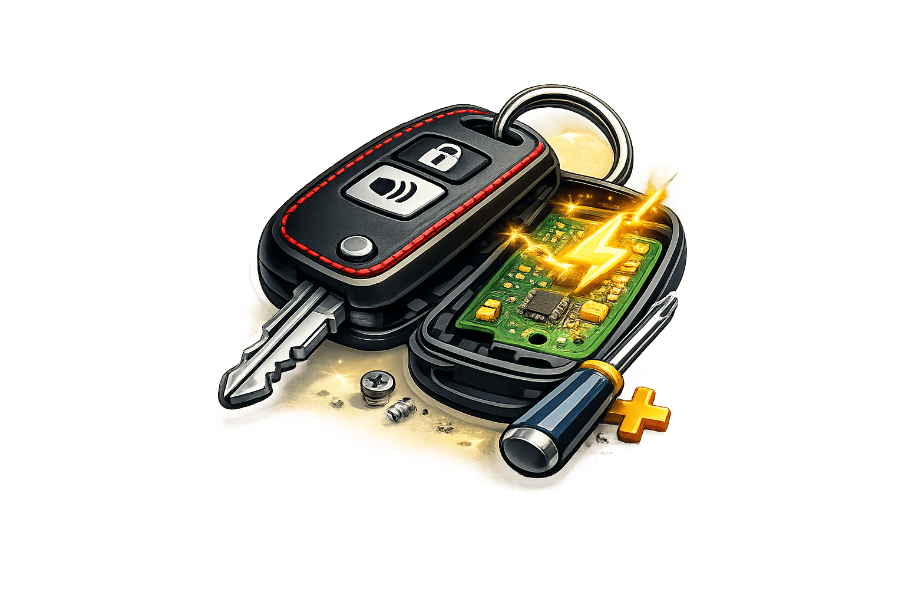
Замена корпуса, кнопок, восстановление платы и ремонт брелков.
Совмещаем скорость, аккуратность и современный подход, чтобы решить задачу без лишней суеты.
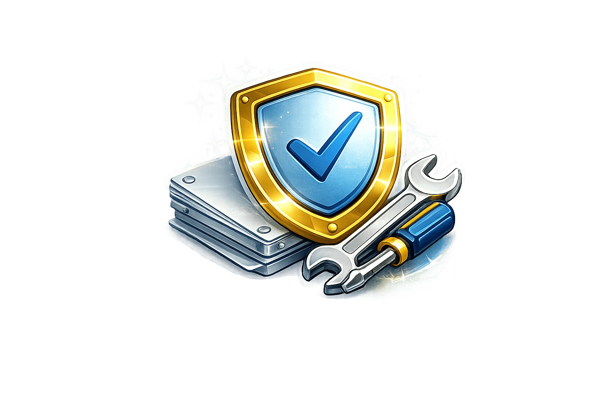
Работаем аккуратно, используем надежные комплектующие и отвечаем за результат.
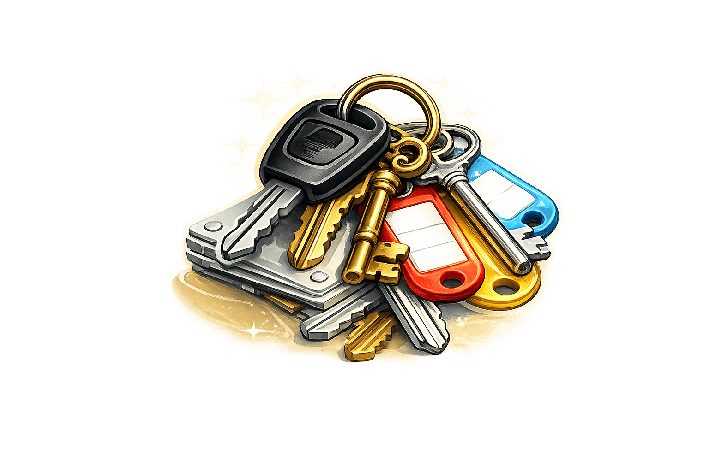
Изготавливаем стандартные и редкие типы ключей для дома, офиса и авто.
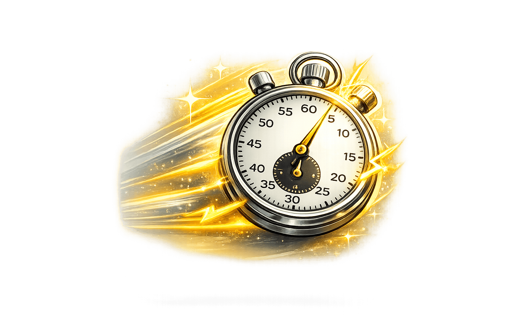
Большинство простых заказов выполняются до пяти минут.
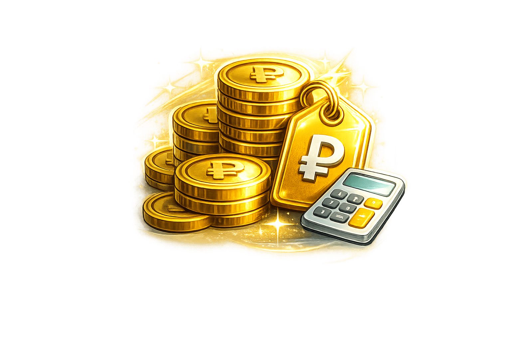
Стоимость зависит от типа ключа и сложности работы. Цены уточняйте по телефону.
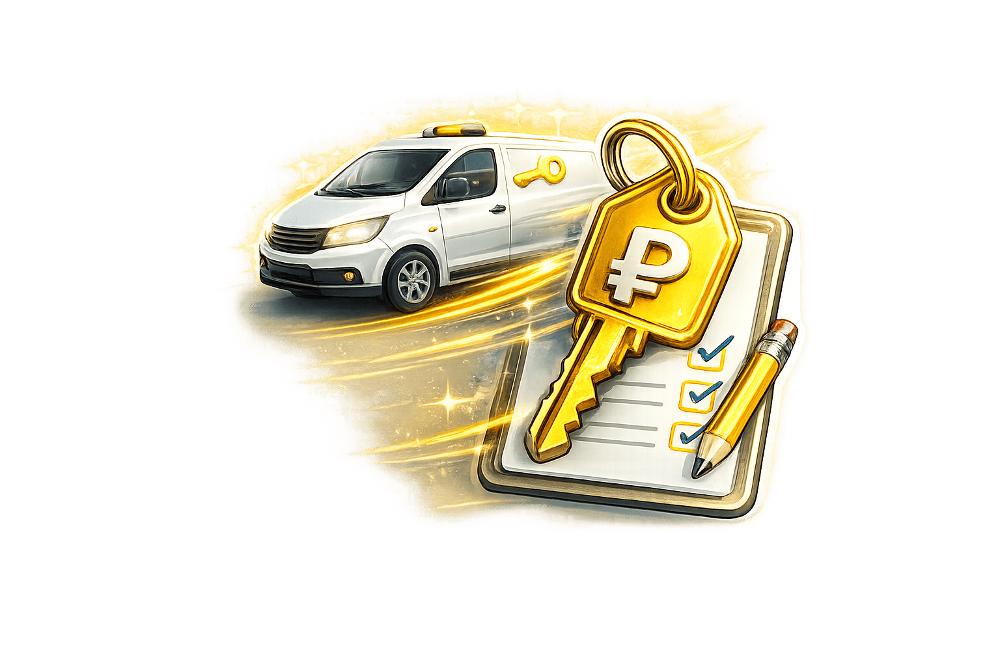
При необходимости поможем на месте и оперативно решим проблему с доступом.
Приезжайте в мастерскую или свяжитесь с нами по телефону — подскажем по срокам, стоимости и наличию нужной заготовки.
Небольшой блок отзывов для повышения доверия и более живого восприятия сайта.
“Очень быстро сделали дубликат автоключа. Всё работает отлично. Рекомендую!”
— Андрей“Потерял ключ от машины, помогли восстановить и запрограммировать новый. Спасибо за оперативность.”
— Дмитрий“Удобное расположение, приятное обслуживание и адекватные цены. Остался доволен.”
— СергейСобрали ответы на популярные вопросы об изготовлении ключей, ремонте автоключей и программировании чипов в Пинске.
Большинство стандартных дубликатов ключей делаем за несколько минут. Более сложные автомобильные ключи и программирование занимают больше времени.
Да, восстанавливаем ключи по замку зажигания или личинке двери. Это актуально при полной утере ключей от автомобиля или после замены личинок.
Да, выполняем программирование автомобильных ключей, чипов и брелков для разных марок и моделей авто.
Ключ-сервис Пинск находится по адресу: г. Пинск, ул. Брестская, 140А. Режим работы уточняйте по телефону.
Помогаем жителям Пинска с изготовлением дубликатов ключей, ремонтом автоключей, восстановлением ключей при утере и программированием чипов и брелков.
Если вам нужен дубликат ключа в Пинске, восстановление ключа по замку, ремонт автоключа или программирование чипа, в Ключ-сервис Пинск можно быстро получить консультацию и подобрать решение под ваш тип ключа. Работаем с бытовыми и автомобильными ключами, выполняем привязку ключа к автомобилю, замену корпусов и кнопок брелков, а также помогаем в аварийных ситуациях при потере ключей.
Мастерская удобно расположена в городе Пинск. Вы можете приехать лично или заранее уточнить по телефону стоимость, сроки изготовления и наличие нужной заготовки.